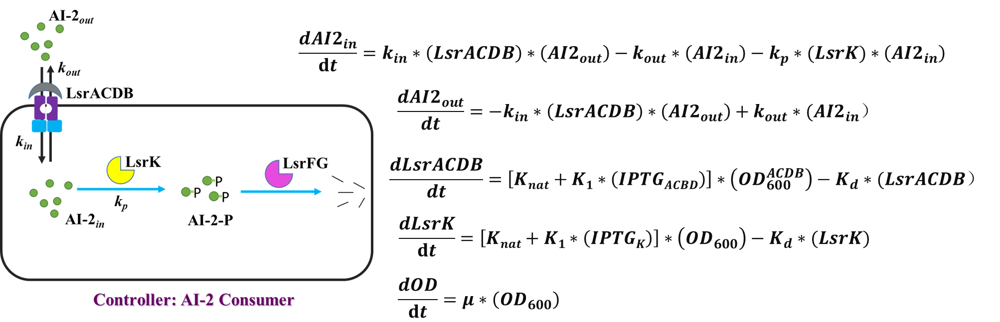
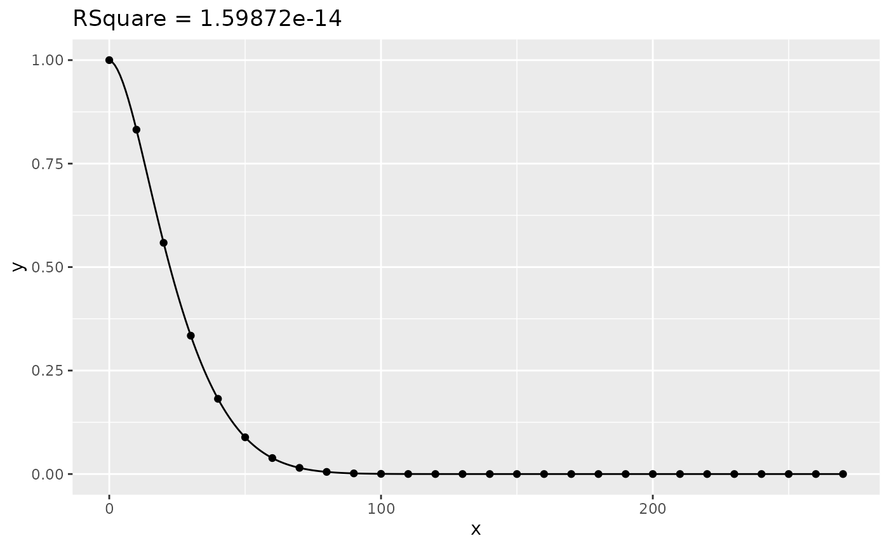

how can you fit this equation? 
When you want to fit a complex model defined by tangled differential equation which can only be solved numerically, existing methods usually takes very long time (you may even run out of memory with some software like Mathematica®). So I implement a novel program which can give a pretty good solution in reasonable time.
ideal.para <- c(k.in = 0.008, k.out = 0.045, k.p = 0.006);
extra <- c(IPTG.ACDB = TRUE, IPTG.K = TRUE, AI2.out.0 = 1);
data <- simulate_data(f_AI2_out, ideal.para, extra, seq(0,270,10));
space <- cbind(integer(length(ideal.para)), ideal.para * 3);
fit <- bisec_fit(data, f_AI2_out, extra, space, 4, 10, 1/3, 1)
assess(fit[[2]], ideal.para)
#> [1] 1.000002
fit.RSquare <- fit[[1]];
fit.para <- fit[[2]];
fit.fun <- f_AI2_out(fit.para, extra)
ggplot() +
geom_point(aes(x, y), data.frame(data)) +
geom_line(aes(x,y), data.frame(x = 1:270, y = fit.fun(1:270))) +
labs(title = paste0('RSquare = ', formatC(fit.RSquare, 6)))